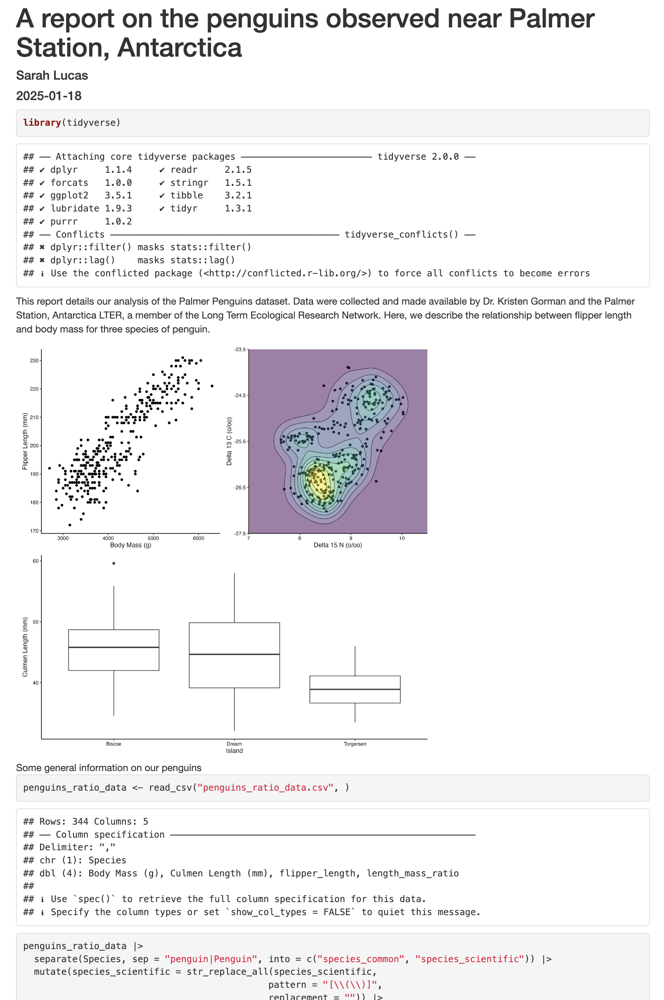
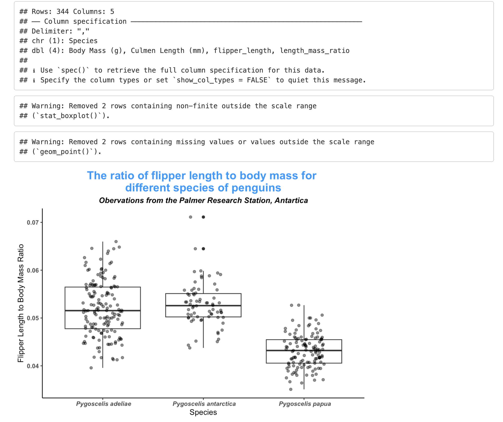

```{r packages, include=FALSE}
library(tidyverse)
```Writing Reports with R Markdown
Questions |
Objectives |
|---|---|
|
|
Discussion
How do you usually share data analyses with fellow students, your PI, or other collaborators?
What is R Markdown and why use it?
In R Markdown, you can incorporate ordinary text (ex. experimental methods, analysis and discussion of results) alongside code and figures! (Some people write entire manuscripts in R Markdown.) This is useful for writing reproducible reports and publications, sharing work with collaborators, writing up homework, and keeping an analysis notebook. Because the code is embedded in the document, the tables and figures are reproducible. Anyone can run the code and get the same results. If you find an error or want to add more to the report, you can just re-run the document and you’ll have updated tables and figures! This concept of combining text and code is called “literate programming”. To do this we use R Markdown, which combines Markdown (renders plain text) with R. You can output an html, PDF, or Word document that you can share with others. In fact, this webpage is an example of a rendered R markdown file!
(If you are familiar with Jupyter notebooks in the Python programming environment, R Markdown is R’s equivalent of a Jupyter notebook.)
Creating a reports directory
To get started, let’s use the Unix Shell (Git Bash for Windows, Terminal for Macs) to create a directory within penguin_project called reports. First, open the Unix Shell and cd to the penguin_projects directory on your Desktop:
$ cd ~/Desktop/penguin_project
$ mkdir reportsNote that there is an option to use the terminal from R Studio (tab next to Console), but on Windows computers this terminal might not be a Unix Shell (unless you are using Git Bash).
Creating an R Markdown file
Now that we have a better understanding of what we can use R Markdown files for, let’s start writing a report!
To create an R Markdown file: - Open RStudio - Go to File → New File → R Markdown
Give your document a title, something like “A report on the mass to flipper length ratio of penguins observed at the Palmer Archipelago, Antarctica” (Note: this is not the same as the file name - it’s just a title that will appear at the top of your report). Keep the default output format as HTML. R Markdown files always end in .Rmd
Now, save your new file in your newly created reports directory.
Basic components of R Markdown
Different outputs
The default output for an R Markdown report is HTML, but you can also use R Markdown to output other report formats. For example, you can generate PDF reports using R Markdown, but you must install TeX to do this.
Header
The first part is a header at the top of the file between the lines of —. This contains instructions for how R should render the document. The instructions are given in a format called YAML, and is made up of key-value pairs (key: value).
Here’s an example:
Code chunks
The next section is a code chunk, or embedded R code, that sets up options for all code chunks. Here is a default code chunk that appears when you create a new R Markdown file:
```{r setup, include=FALSE}
knitr::opts_chunk$set(echo = TRUE)
```
All code chunks have this format:
```{r}
# Your code here
```
All of the code is enclosed in 3 back ticks, and the {r} part indicates that it’s a chunk of R code.
You can also include other information within the curly brackets to indicate different instructions for how that code chunk should be interpreted. For instance, the first code block is named “setup”, and include=FALSE prevents code and results from showing up in the output file.
Inside the code chunk, you can write any R code that you want to run, and you can have as many code chunks as you want in your file.
As we mentioned above, in the first code chunk you can set options for the entire file. echo = TRUE means that you want your code to be shown in the output file. If you change this to echo = FALSE, then the code will be hidden and only the output of the code chunks will be seen in the output file. There are also many other options that you can change.
Text
Finally, you can include text in your R Markdown file. This is any text or explanation you want to include, and it’s formatted with Markdown. We’ll learn more about Markdown formatting soon!
Starting our report
Let’s return to the new R Markdown file you created and delete everything below the setup code chunk. (That stuff is just examples and reminders of how to use R Markdown.)
Next, let’s save our R markdown file to the reports directory. You can do this by clicking the save icon in the top left or using control + s (command + s on a Mac).
There’s one other thing that we need to do before we get started with our report. To render our documents into html format, we can “knit” them in R Studio. Usually, R Markdown renders documents from the directory where the document is saved (the location of the .Rmd file), but we want it to render from the main project directory where our .Rproj file is. This is because that’s where all of our relative paths are from and it’s good practice to have all of your relative paths from the main project directory. To change this default, click on the down arrow next to the “Knit” button at the top left of R Studio, go to “Knit Directory” and click “Project Directory”. Now it will assume all of your relative paths for reading and writing files are from the penguins_repo directory, rather than the reports directory.
Now that we have that set up, let’s start on the report!
We’re going to use the plots and cleaned data you generated yesterday to create this report. Recall that we needed the tidyverse R package, so let’s load it here in a new code chunck. You could also include this in the previous setup chunk, it’s up to your personal preference.
```{r packages}
library(tidyverse)
```Now, in a real report this is when we would type out the background and purpose of our analysis to provide context to our readers. However, since writing is not a focus of this workshop we will avoid lengthy prose and stick to short descriptions. You can copy the following text into your own report below the package code chunk.
This report details our analysis of the Palmer Penguins dataset. Data were collected and made available by Dr. Kristen Gorman and the Palmer Station, Antarctica LTER, a member of the Long Term Ecological Research Network. Here, we describe the relationship between flipper length and body mass for three penguin species.
Including our analysis
Next, we will go over a couple different ways we can include data into our report.
Inserting our saved plots
In an R Markdown file, we can use markdown syntax to pull in a figure we have saved from our plotting lesson. The code below allows us to access the .jpg file we made yesterday during the plotting lesson.
{width="600"}There are several components to this markdown element. First, we begin with an exclamation point ! followed by a pair of square brackets that contains a figure caption. Next, a pair of parentheses contains the path to the file, relative to our .Rmd file. Finally, in a pair of curly braces, we can dictate the size in pixels we want our figure to be in the document. Since our figure is pretty big, we downsize it to a width of 600 px. There are many other ways you can customize outside figures.
Coding our analysis right in the .Rmd document
One great thing about R markdown documents is we can interweave text and code. That means we can do a quick analysis an insert a new figure in our report. Let’s add some quick text to describe what we want to show:
We have calculated the flipper length to mass ratio for three species of penguins in our dataset. Below is a boxplot showing the median and interquartile range for all penguins.Below, we will read in our penguins_ratio_data.csv file we saved yesterday, do a little more cleaning up, and plotting.
```{r ratioPlot}
penguins_ratio_data <- read_csv("penguins_ratio_data.csv")
penguins_ratio_data |>
separate(Species, sep = "penguin|Penguin", into = c("species_common", "species_scientific")) |>
mutate(species_scientific = str_replace_all(species_scientific,
pattern = "[\\(\\)]",
replacement = "")) |>
ggplot(aes(x = species_scientific, y = length_mass_ratio)) +
geom_boxplot() +
geom_jitter(width = 0.2, alpha = 0.5) +
theme_classic() +
labs(title = "The ratio of flipper length to body mass for \ndifferent species of penguins",
subtitle = "Obervations from the Palmer Research Station, Antartica",
y = "Flipper Length to Body Mass Ratio",
x = "Species") +
theme(
axis.text.x = element_text(face = "bold.italic"),
axis.text.y = element_text(face = "bold"),
plot.title = element_text(color = "#0099f8", size = 16, face = "bold", hjust = 0.5),
plot.subtitle = element_text(face = "bold.italic", hjust = 0.5),
plot.caption = element_text(face = "italic")
)
```Now we can knit our document to see how our report looks! Use the knit button in the top left of the screen. Below is just the top part of our report, but we can already seem some areas that need a little tidying up.

Cleaning up our work
It’s looking pretty good, but there seems to be a few extra elements that we don’t need to see in the report. For example, the report shows that we load the tidyverse package and the accompanying messages.
To get rid of this, we can revise our packages code chunk by adding include=FALSE just like in the setup chunk to prevent code and messages in this chunk from showing up in our report.
We can also see the code that was used to generate the plot. Depending on the purpose and audience for your report, you may want to include the code. If you don’t want the code to appear, how can you prevent it? Using the echo=FALSE option will allow us to see the output without the code that generated it.
```{r ratioPlot, echo=FALSE}
[...rest of plotting code here...]
```Here is a snapshot of the output after we add echo=FALSE to our code chunk:

We still have some pesky warnings and messages that are included in our report. There are special options to remove these two types of output as well. Let’s include the two options, warning=FALSE and message=FALSE in our code chunk:
```{r ratioPlot, echo=FALSE, message=FALSE, warning=FALSE}
[...rest of plotting code here...]
```When we Knit our .Rmd file again we can see that our report is really starting to take shape!
Inline code
Sometimes, you want to describe your data or results (like our plot) to the audience in text but the data and results may still change as you work things out. R Markdown offers an easy way to do this dynamically, so that the text updates as your data or results change. Here is how to do this.
First, let’s create a new code chunk that summarizes features of our data that we can use to describe our plot to our audience. Note that we set include=FALSE because we only want this step to happen in the background. We will calculate the average flipper length to mass ratio for each species of penguin in the dataset.
gentoo_ratio_mean <- penguins_ratio_data |>
filter(Species == "Gentoo penguin (Pygoscelis papua)") |>
summarise(round(mean(length_mass_ratio, na.rm = TRUE), digits = 3)) |>
pull()
adelie_ratio_mean <- penguins_ratio_data |>
filter(Species == "Adelie Penguin (Pygoscelis adeliae)") |>
summarise(round(mean(length_mass_ratio, na.rm = TRUE), digits = 3)) |>
pull()
chinstrap_ratio_mean <- penguins_ratio_data |>
filter(Species == "Chinstrap penguin (Pygoscelis antarctica)") |>
summarise(round(mean(length_mass_ratio, na.rm = TRUE), digits = 3)) |>
pull()Now, all we need to do is reference the values we just computed to describe our plot. To do this, we enclose each value in one set of backticks (some_R_variable_name), while the r part once again indicates that it’s a chunk of R code. When we knit our report, R will automatically fill in the values we just created in the above code chunk. Note that R will automatically update these values every time our data might change.
The above plot shows the relationship between penguin body mass and flipper length. The Gentoo penguins had the smallest flipper length to body mass ratio, with an average of `r gentoo_ratio_mean `, followed by the Adelie and the Chinstrap penguins, at `r adelie_ratio_mean ` and `r chinstrap_ratio_mean `, respectively.The code above will render to this text:
The above plot shows the relationship between penguin body mass and flipper length. The Gentoo penguins had the smallest flipper length to body mass ratio, with an average of 0.043, followed by the Adelie and the Chinstrap penguins, at 0.052 and 0.053, respectively.
Tables
In addition to reporting specific values in the text, we may also want to show a table of values. With R Markdown there are multiple ways to product tables. One way to generate smaller tables is manually. Using a special format we can generate a table in our output. Note that this does not get generated in a code chunk because it is markdown formatting not R code.
|HEADER 1|HEADER 2|
|-------------|-------------|
|row 1, column1|row 1, column 2|
|row 2, column1|row 2, column 2|Columns are separated by the pipe key | located above Enter on the keyboard. The dashes distinguish the header row from the rest of the table. This header could be a name for each column or a header for the whole table. Now that we know the basic structure we can fill in our table. This is how we could present the same numbers from the previous paragraph as a table instead, again using in-line code. Copy and paste the following code into your .Rmd report file.
| Average Penguin Length to Body Mass Ratio | |
|-------------------------------------------|--------------------------|
| Gentoo penguin (Pygoscelis papua) | `r gentoo_ratio_mean ` |
| Adelie Penguin (Pygoscelis adeliae) | `r adelie_ratio_mean ` |
| Chinstrap penguin (Pygoscelis antarctica) | `r chinstrap_ratio_mean ` |When we render our report using this above table in our document, we get the following result:
Formatting
We now know how to create a report with R Markdown. Maybe we also want to format the report a little bit to structure our thought process in a useful way (e.g., sections) and make it visually appealing? Markdown is a very simple programming language when it comes to syntax. Let’s try to figure out some syntax together. Suppose we wanted to create sections in our report.
R Markdown headers
Markdown syntax allows us to easily denote different sections with headers. To do this, simply att the # symbol before your header text using the below convention:
# Level 1 Header
## Level 2 Header
### Level 3 Header… and so on.
Using Posit Cheat sheets
Posit makes some great cheat sheets for writing in Markdown, and so much more. You can find these cheat sheets in the Help menu at the top of your RStudio window. You can also easily find them online.
Revisiting Version Control: Stage, Commit, and Push our work to GitHub
Now that we have a report we are happy with, let’s push the changes to GitHub!
Returning to the command line:
Check the status of our repository with the git status. This will tell us which files just changed.
Add the new files that we want tracked by git with git add <filename(s)>. This adds any file(s) we list to version control.
Commit the file or changes with git commit -m “
Push those changes from our local computer to our github repo with git push. This will upload the changes to the git directory on the remote server.